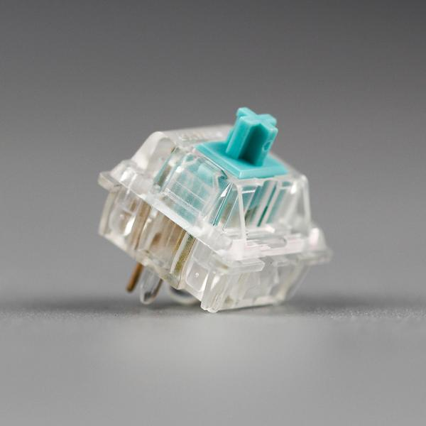
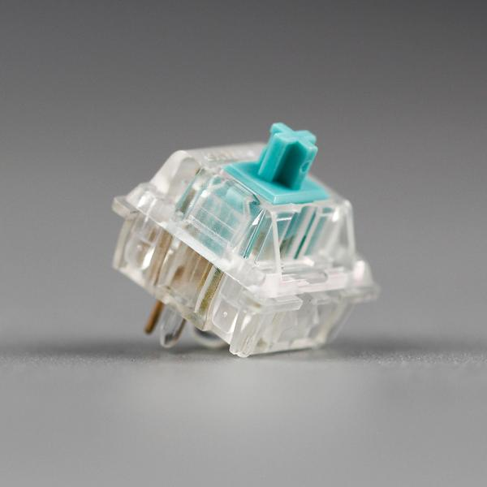
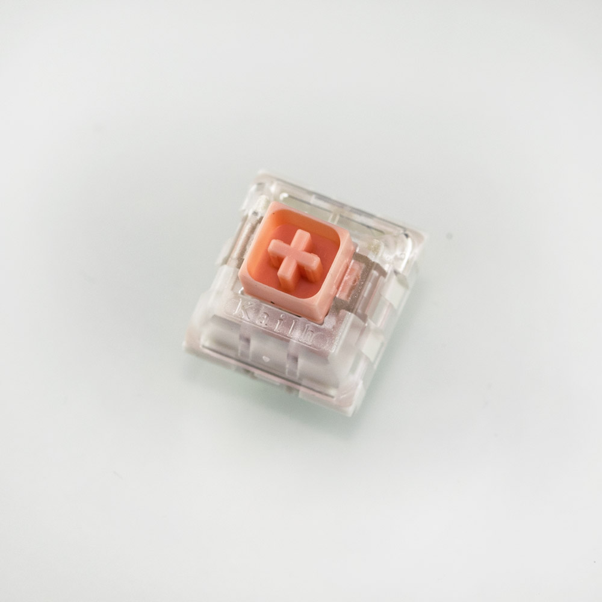
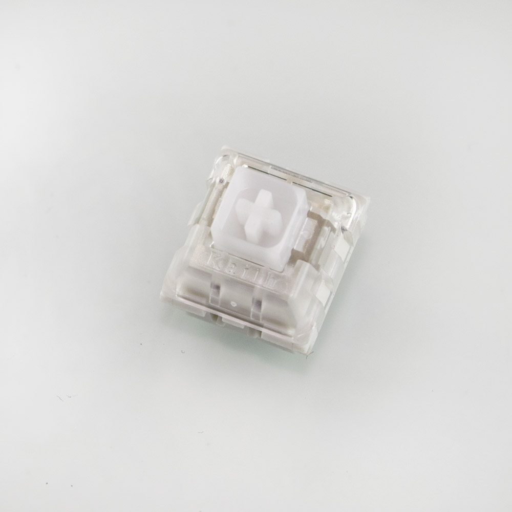

ZealPC
One of the most notorious community members and creators of 2 of the best switches available, Zealios and Tealios. Working with Gateron, they produced one of the best tactile switches(Zealios), and arguably the smoothest stock linear switch on the market(Tealios).
 

InputClub
Another big powerhouse in the community. Developers of the notorous keyboard kit Whitefox have designed a down-to-the-core typist switch. The Hako Trues and Clears have springs that get tremendously heavier the more you bottom out. This is done to prevent you from bottoming out since it is proper form to only press a switch only to the actuation point which for most switches are around the half way point. Also to be noted is that the stem also has the same box architecture as Kailh's box switches.
 